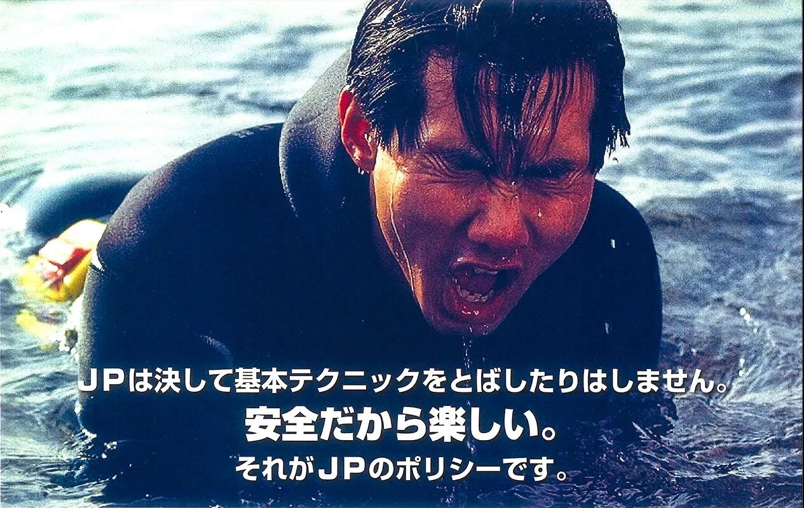

The road Orz passed by 2026 年 07 月
07 月 02 日 ( 木 )
Dive #174 1990 年 3 月 21 日の白浜円月島で高橋 CMAS コースディレクターがなんでぼくにあのレスキュートレーニングをするに至ったのか想像してみた
1990 年 3 月 21 日の白浜円月島で、CMAS コースディレクターの高橋インストラクターがパニック状態になって、激しく暴れる溺者を演じ、当時単なる NAUI Open Water I Scuba Diver に過ぎないレスキュー役のぼくによじ登り、ぼくを蹴り沈め、本当に溺れそうになりかけるようなレスキュートレーニングをやったのか考えてみた。
当時であっても周囲を見渡してもそんなことをされている NAUI Open Water I スクーバダイバーなんて見当たらなかった。
そのレスキュートレーニングの前に、ぼくと小寺くんは高橋さんの指導下で、次のスキンダイビングメニューをやっていた。
-3m 以深までぼくがスキンダイビングで潜り、水面で待機している小寺くんを待ち受ける。そして小寺くんががスキンダイブで潜ってきたら、お互いのマスクとスノーケルを交換し、マスクを装着して水底でマスククリア、そして正しい手順で浮上。もちろんスノーケルクリアも普通にする。
もう一つは同じくぼくが水底で小寺くんを待ち受け、今度はマスクとスノーケルだけでなく、３点セットを水底で交換して、マスククリアとスノーケルクリアも実施して浮上する。
当時厳しいと言われていた（ぼくは厳しいとは思わなかったけど） NAUI Open Water I Scuba Diver コースでもここまではやらない。
その頃ぼくは知り合った CMAS インストラクターから CMAS の ITC の厳しい話をたくさん聞いていたので CMAS は厳しい、という認識はあった。

CMAS 系指導団体の JP のあの広告イメージもその思い込みに拍車をかけていたのかもしれない。
なので CMAS って 1 Star (Open Water と同等) からこんなハードなことやるのかと、普通に思いながらやっていた。
それで実際にできたのかと言うとできなかった。
ぼくが水深 -3.5m くらいでマスクを外して小寺くんを待っているのだけれど、小寺くんが緊張のあまり耳が抜けず入ってこれない。さっきまできれいなジャックナイフを決めて 3.5m くらいまで平気で入ってきてたのに。
なんだかんだ言って小寺くんはまだ 1 Star の講習の真っ最中。さすがに水深 -3.5m でのスキン機材交換は怖かったというか、むっちゃ緊張したんだと思う。本当にできるんだろうかって。だって数週間前まではスキンダイビングすら未経験者だったんだし。
バディの小寺くんが入ってこれないので、ぼくもそんな長時間息は持たないこともあって、マスクをつけ直してマスククリアをして、高橋さんに浮上していいか？ってハンドサインで確認して、なるべく正しい手順で浮上してっていうことを何度か繰り返していた。
それだけじゃなくてフィンも含めたスキン機材交換もやったけれど、同じ結果だった。
そのときに、水深 -3.5m でぼくがわりと躊躇なくスキン装備を外すので、高橋さんは、こいつにはマジのパニック溺者の確保トレーニングをしても大丈夫なんじゃないかと踏んだのかもしれない。
あるいはぼくがあまりに躊躇なく水中で機材を外すので、水中がどういう環境なのか、こいつわかってないんじゃないか？教えないとダメなんじゃないか？と思ったのかもしれない。
もちろん、これは高橋さん本人に確認したわけではなく、ぼくの推測に過ぎないのだけれど。
ぼくはやったことがない水中でのスキン装備交換で、実際はこんなの自分にできるのか？と心臓ドキドキ状態だったのだけど、口に出さないし態度に出さなかったので、普通わからないとは思う。
でもぼくが水深 -3.5m でマスクもスノーケルもフィンも躊躇なく外していたのは、CMAS ではそいういうものなんだろうと、あまり何も考えてなかっただけなんだけど。
たぶんそれでこの日、高橋さんは溺者役になって、本当の溺者がどう行動するかをぼくと小寺くんに身をもって教えてくれだんだと思う。蹴り沈められて溺れそうにさせられたのは、ぼく１人だけだったけど。
だから 1990 年の円月島で高橋コースディレクターが体で教えてくれたのは以下の点。
- パニックなってる溺者に接近したら、最初に救助者が死ぬ
- 動かなくなるまで近づくな
- 動かなくなってから曳航しろ
- 死にたくなければそうしろ
- 死体は２つより１つのほうがマシ
- 運が良ければ最初の溺者も助かる
- そして人は簡単に海で死ぬ
暴れる高橋さんによじ登られて、蹴り沈められ、ぼくが溺れかけるのを、小寺くんは見てただけだけど、でもぼくと同じ理解をしていたと思う。顔こわばってたし。
小寺くんに対するデモンストレーションも兼ねていたのかもしれないけど、今から考えると小寺くんが、怖くなってやっぱりダイビングやんぴ、となってもおかしくないデモストレーションだった気もする。
ぼくはその何年かあとに、まずはインストラクターを目指すことになるけれども、もしぼくがその時アシスタント・インストラクターになっていたとしたら、高橋さんに「これ、いつもやってるんですか？受講生危なくないですか？」とは訊くとは思う。
「君だからやった。だって 1 Star の講習の単なるつきそいだったら、面白くもなんともないでしょ？」なんて高橋さんなら言うかもしれない。まぁこれもあくまでぼくの想像だけど。
その CMAS 1 Star のレスキュートレーニングを受けてからのぼくは、NAUI Open Water I Sucba Diver で繰り返したレスキューをおままごとだと認識するようになった（怒らないでね）。
その後受けることになる NAUI Rescue Diver SP も同様だった（怒らないでね）。
さらには数年後に受けることになる NAUI ITC のレスキュー検定もミスったのにもかかわらず偉そうに、こんなのおままごとじゃん、助からねぇよって思ってた。おままごとにしては、やたらとハードで、怒られもしたけど。
おままごとと思いながらも、やらないといけない時が来たら起きたら、やるしかないのでやるんだけど。でも時間をかけて、と言ってもわずか数ヶ月だけど、だんだんとぼくと小寺くんは事故は予防しかねえわ、って方向に考え方が進む。
ぼくは NAUI Open Water I Scuba Diver に過ぎなかったし、小寺くんは 1 Star の講習中だからまさに Open Water の講習の真っ最中。
ぼくはその翌年に NAUI Rescue Diver SP を受けるし、小寺くんは 1 Star を取った直後に高橋さんの指導でレスキューを取る。
今の人たちはプロになるわけじゃないからレスキューなんていらないって言う。まぁ別にそれは今の時代、間違ってはいない。だって自分の命に対して自分で責任を背負って、可能な限り自己管理を徹底して潜ることなんてないし。
でもガイドがいれば安全、インストラクターがいれば安全、というのはぼくは今でもそんなのは幻想で虚構に過ぎないって思ってもいる。ただあまりこれを言うとぼくが大好きなコースディレクターやベテランインストラクターと対立することになるので、あまり主張しないことにしている。
ぼくがなんで OW なのにレスキュー取るの？って訊かれたら、バディ（小寺くん）に死なれたくないからって即答してた。
今でもプロになるわけでもないのになぜレスキューを取らないとだめなの？必要ないでしょ？そんなコース無駄でしょ？、と言われたら、自分が事故になりやすい思考と行動を捨てることと、いざというときにバディに死なれないため、そう即答できる。
ぼくも小寺くんもレベルアップを目指すのはプロになるためじゃなかったし、お互いに相手が海で変わり果てた姿になるのが嫌だったし、怖かったから、ってことになる。
ぼくと小寺くんにとってはレスキューは実用技術を学ぶコースであって、プロになるとかそんなのはまったく関係ない話だった。ぼくらには必要だったから取った。ただそれだけだった。
だからなぜレスキューを取るのかという問いにはたった一言で答えることができる。
「ぼく自身とバディと仲間の安全のため」
これはぼく自身のダイバーとしてのレスキュー哲学の基礎だし、今も全く変わらない。これは単なるレスキュー哲学ではなく、ぼくのダイビング哲学の基礎になる。
だからぼくが本気で怒ったときに口にする
「それをバディや仲間の前で言えるのか！？」
という言葉の源泉はこのダイバーとしての哲学が源泉となっている。
現在主流のツーリズム型ダイビング体験とは相性は非常に悪いだけでなく、まぁ商売にはなりにくい。
- Category :
- #Records of Orz's Road
- #ダイビング
- #スクーバダイビング
- #レスキュー
- #バディ
- #和歌山県
- #白浜町
- #円月島
- #レスキュー哲学
- #ダイビング哲学